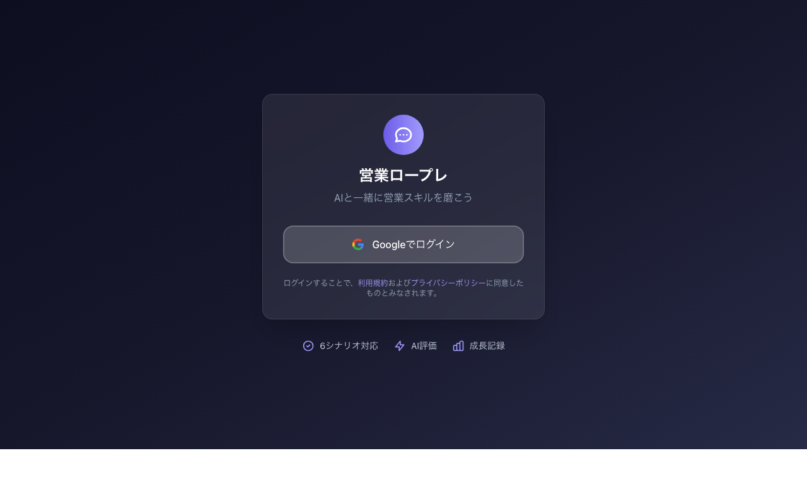
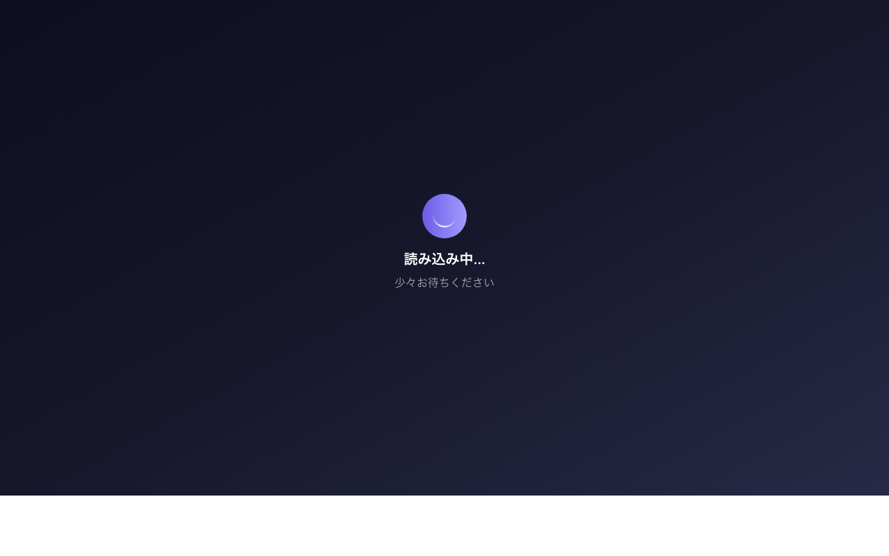

初心者でもすぐに始められる使い方ガイド
このシステムは、ショート動画制作営業のロープレ（ロールプレイング）練習を、AIを使って一人で行えるシステムです。
システムを利用するには、まずアカウントの登録とログインが必要です。
システムのURLにアクセスすると、ログイン画面が表示されます。
画面下部の「アカウントをお持ちでない方はこちら」または「新規登録」ボタンをクリックします。

以下の情報を入力します：
「登録」ボタンをクリックすると、アカウントが作成されます。
登録が完了すると、自動的にログインされ、ロープレシステムのトップページに移動します。
ログインに成功すると、ロープレシステムのトップページに移動します。
ログイン画面の「パスワードをお忘れですか？」リンクから、パスワードリセットの手続きができます。登録したメールアドレスにリセット用のリンクが送信されます。
企業や店舗で複数人で利用する場合、管理者から「店舗コード」が提供されます。登録時にこのコードを入力することで、組織内での練習履歴や統計を共有できます。
初めてアクセスすると、ブラウザから「マイクの使用を許可しますか？」と聞かれます。必ず「許可」を選択してください。許可しないと音声入力ができません。
以下の手順で、ロープレを始めることができます。
ブラウザでシステムのURLを開き、ログインします。
ログイン後、ロープレシステムのトップページが表示されます。

画面上部の「シナリオ選択」から、練習したいシナリオを選びます。
「ペルソナ選択」ボタンをクリックして、お客様の業種を選びます。
最初は「おまかせ」でランダム選択がおすすめです。様々な業種のお客様と話すことで、対応力が身につきます。
お客様の態度や質問の難易度を3段階から選べます。
「ロープレ開始」ボタンをクリックすると、AIお客様との会話が始まります。
会話が一段落したら、「講評をもらう」ボタンをクリックします。
GPT-4があなたの営業スキルを分析し、詳細な講評を表示します。
シナリオは、営業の商談フェーズに応じて4種類用意されています。
目標：お客様の警戒心を解き、信頼関係を構築する
お客様の態度：慎重で、あまり多くを話してくれない
重点スキル：
会話の流れ：挨拶 → ニーズ分析 → 軽い提案 → 次回アポイント
目標：お客様の課題を深く理解し、具体的なニーズを引き出す
お客様の態度：少し心を開いており、質問に答えてくれる
重点スキル：
会話の流れ：前回の振り返り → 課題の深掘り → 方向性の提示 → 次回提案の予告
目標：具体的な提案と見積を提示し、お客様の理解を得る
お客様の態度：前向きだが、費用対効果を気にしている
重点スキル：
会話の流れ：挨拶 → 提案説明 → 質疑応答 → 懸念解消 → 次回クロージングの予告
目標：最終確認を行い、契約につなげる
お客様の態度：ほぼ決定に向かっているが、最終確認が必要
重点スキル：
会話の流れ：挨拶 → 最終確認 → 懸念解消 → 契約条件の確認 → クロージング
ペルソナとは、AIお客様の「設定」のことです。業種、現状、課題、予算感などが設定されています。
| 業種 | 特徴 | 難易度 |
|---|---|---|
| 美容サロン | Instagram重視、ビジュアル重視 | 中 |
| 飲食店 | 予算に敏感、効果を重視 | 中 |
| 不動産 | 堅実、データ重視 | 高 |
| フィットネス | SNS活用に前向き | 中 |
| 小売店 | コスト重視、効果測定に敏感 | 高 |
ロープレ終了後、GPT-4があなたの会話を分析し、以下の4項目で評価します。
顧客のニーズや課題を適切に引き出す質問ができているか
良い例：
改善点の例：
相手の発言を理解し、適切に受容・共感できているか
良い例：
改善点の例：
顧客の課題に対する具体的な解決策を提示できているか
良い例：
改善点の例：
次のアクションや決定を促す適切なクロージングができているか
良い例：
改善点の例：
| スコア | 評価 | 説明 |
|---|---|---|
| 5点 | 非常に優れている | プロレベル、模範的なトーク |
| 4点 | 優れている | 実践的なスキルが十分にある |
| 3点 | 平均的 | 基本スキルはあるが、改善点が複数ある |
| 2点 | 要改善 | 基本スキルが不足している |
| 1点 | 大幅な改善が必要 | スキルがほとんど発揮されていない |
A. 以下を確認してください：
A. スコアが低い場合、以下の可能性があります：
講評の「改善点」をよく読んで、次回のロープレで実践してみてください。
A. 以下を確認してください：
A. 画面右上の「リセット」ボタンをクリックすると、会話をやり直せます。
A. 講評は自動的にデータベースに保存されます。過去の講評は「履歴」から確認できます。
A. はい、スマートフォンのブラウザでも利用できます。Chrome、Safariなどのモダンブラウザを使用してください。